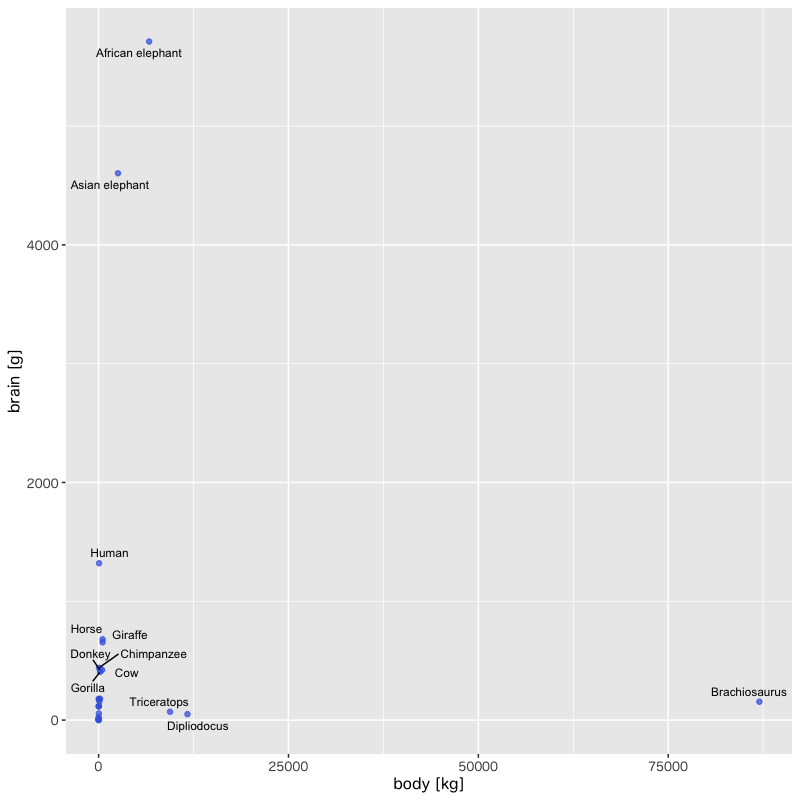
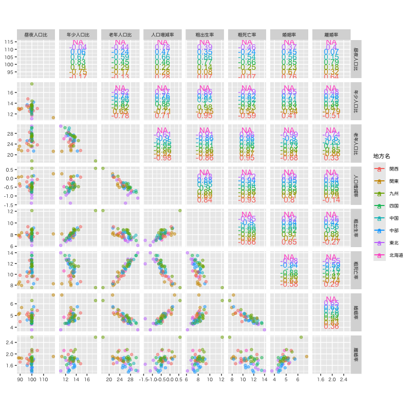
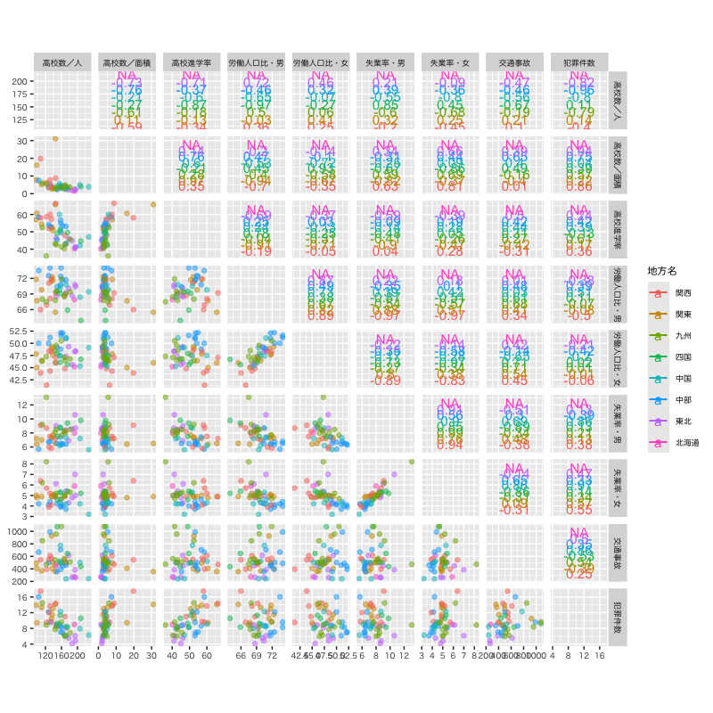
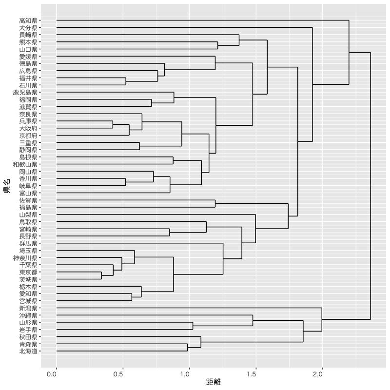

講義の概要
多変量解析 - 第1講
(Press ? for help, n and p for next and previous slide)
この講義について
講義の概要
- 講義題目 : 多変量解析
- 担当 : 村田 昇
- 授業の目標
- 統計解析手法である 多変量解析
の基本的な方法に習熟する
- 大規模データから効果的に情報を抽出する
- データの背後に潜む統計的構造をモデル化して分析する
- 解析法の数理科学的側面を理解する
- 実データに多変量解析を適用する
- 統計解析手法である 多変量解析
の基本的な方法に習熟する
受講にあたっての注意
- 微分積分学と線形代数学を復習しておく
- 自身で解析するための計算機環境を準備する
- 講義の資料は Moodle および Web で公開する
- 成績評価は課題の提出(2回)による
- 回帰分析
- 自由課題
講義計画 (予定)
- オリエンテーション
- 数学的準備 (1回)
- 回帰分析 (3回)
- 第1回レポート (回帰分析終了から2週間で締切)
- 主成分分析 (2回)
- 判別分析 (2回)
- クラスタ分析 (2回)
- 時系列解析入門 (2回)
- 第2回レポート (1月末締切，自由課題)
講義の内容
- 多変量解析法の紹介
- 回帰分析
- 主成分分析
- 判別分析
- クラスタ分析
- 時系列解析
- 関数の微分
- ベクトルによる微分
- 行列による微分
多変量解析
多変量解析とは
- 複数の変量からなるデータを分析する手法の総称
- 回帰分析 : 複数の量を用いて注目する変数の値を説明する
- 主成分分析 : 全体を説明する少数の特徴量を構成する
- 判別分析 : 特徴量の違いでカテゴリ分けを行う
- クラスタ分析 : 特徴量の違いに着目してクラスタを構成する
- 時系列解析 : 時間とともに変化する現象を記述する
- 機械学習で使われる手法の基礎
- 教師あり問題 : 回帰分析(量的データ)・判別分析(質的データ)
- 教師なし問題 : 主成分分析・クラスタ分析
回帰分析の考え方
- ある変数(目的変数)を別の変数(説明変数)によって説明・予測するための関係式(回帰式)を構成する
- 単回帰 : 一つの変数で目的変数を説明する
- 重回帰 : 複数の変数で目的変数を説明する
- 分析の事例
- 広告宣伝費と商品の売上を予測する式を作り，広告効果があるかどうか判定する
- 築年数・駅からの距離・広さ・間取りで家賃を説明する式を作り，新規に家賃を設定する際に利用する
例 : 体重と脳の重さの関係
| body | brain | |
|---|---|---|
| Mountain beaver | ||
| Cow | ||
| Grey wolf | ||
| Goat | ||
| Guinea pig | ||
| Dipliodocus | ||
| Asian elephant | ||
| Donkey | ||
| Horse | ||
| Potar monkey | ||
| Cat | ||
| Giraffe | ||
| Gorilla | ||
| Human |

Figure 1: 体重と脳の重さの関係

Figure 2: 体重と脳の重さの関係 (対数変換)

Figure 3: 回帰式とその信頼区間
例 : ボルドーワインの価格と気候の関係
| VINT | LPRICE2 | WRAIN | DEGREES | HRAIN | TIME_SV |
|---|---|---|---|---|---|

Figure 4: 価格と気候の散布図
| Characteristic | Beta | 95% CI | p-value |
|---|---|---|---|
| Abbreviation: CI = Confidence Interval | |||
| R² = 0.828; Adjusted R² = 0.796; Statistic = 26.4; p-value = <0.001 | |||

Figure 5: 重回帰による予測値と実際の価格
主成分分析の考え方
- 多数の変数が与えられたときに，変数のもつ構造を効率的に記述できる少数個の特徴量を構成する
- 分析の事例
- 野球選手の打撃成績(打率，本塁打数，打点など)から，打者としての特徴を記述する指標を作成する
- 複数銘柄からなる株価の時系列データから，市場全体の変動を記述する総合指標を作成する
例 : 都道府県別の生活環境
| 県名 | 地方名 | 昼夜人口比 | 年少人口比 | 老年人口比 | 人口増減率 | 粗出生率 | 粗死亡率 | 婚姻率 | 離婚率 | 高校数／人 | 高校数／面積 |
|---|---|---|---|---|---|---|---|---|---|---|---|

Figure 6: 都道府県別の人口動態

Figure 7: 都道府県別の教育・労働環境

Figure 8: 都道府県別の貯蓄・余暇

Figure 9: 都道府県別の生活環境の主成分分析
判別分析の考え方
- ある個体が複数のクラスのいずれかに属するとき，その個体の特徴量からどのクラスに属するかを予測するモデルを構築する
- 分析の事例
- 食道がんを患っている人とそうでない人を，年齢・飲酒量・喫煙度から判別する
- 銀行が融資判断をするために，企業の財務データから，その企業が期間内に債務不履行となるか否かを予測する
例 : 乳癌患者の生研検査
| V1 | V2 | V3 | V4 | V5 | V6 | V7 | V8 | V9 | class |
|---|---|---|---|---|---|---|---|---|---|

Figure 10: 乳癌患者(良性・悪性)の生研検査の散布図

Figure 11: 生研検査の主成分分析

Figure 12: 生研検査による乳癌患者の判別分析
クラスタ分析の考え方
- 特徴量の違いに着目して，妥当な個体のグループ(クラスタ)を構成する
- 階層的な方法 : 系統樹を作成する
- 非階層的な方法 : グループの代表値を推定する
- 分析の事例
- 映画に関するアンケート調査から潜在的なジャンル(グループ)を抽出する
- 顧客の購買履歴から，嗜好の異なる顧客グループに分類し，グループごとの販売戦略を立てる
例 : 好きなおむすびの具に関するアンケート
| 県名 | 梅 | 鮭 | 昆布 | 鰹 | 明太子 | 鱈子 | ツナ | その他 |
|---|---|---|---|---|---|---|---|---|
Figure 13: 都道府県別の好きなおむすびの具の集計結果

Figure 14: アンケート結果にもとづく県のクラスタ分析
時系列解析の考え方
- 時間とともに変化する現象を記述するために，未来の値を過去の値で近似する式を構成する
- 自己回帰 (ARモデル) : 過去の影響の記述
- 移動平均 (MAモデル) : 記憶のある不確定性
- 分析の事例
- 市町村の過去の年齢別の人口変動から将来の人口比率の推移を予測する
- 食品・飲料の季節ごとの販売履歴から，将来の需要量を予測して生産計画を立てる
例 : 米国航空機旅客量の変遷
| Monthly Airline Passenger Numbers | ||||||||||||
| 1949-1960 | ||||||||||||
| Year | 1月 | 2月 | 3月 | 4月 | 5月 | 6月 | 7月 | 8月 | 9月 | 10月 | 11月 | 12月 |
|---|---|---|---|---|---|---|---|---|---|---|---|---|

Figure 15: 旅客量の変遷

Figure 16: 階差時系列の自己相関分析

Figure 17: SARIMAモデルによる旅客量の予測
関数の微分
ベクトルによる微分
\(d\) 次元ベクトル
\begin{equation} \boldsymbol{a} =\begin{pmatrix} a_1\\ a_2\\ \vdots\\ a_d \end{pmatrix} =(a_1,a_2,\dotsc,a_d)^{\mathsf{T}} \end{equation}ベクトル \(\boldsymbol{a}\) による関数 \(f(\boldsymbol{a})\) の微分の定義
\begin{equation} \frac{\partial f}{\partial\boldsymbol{a}} = \left( \frac{\partial f}{\partial a_1}, \frac{\partial f}{\partial a_2}, \dotsc, \frac{\partial f}{\partial a_d} \right)^{\mathsf{T}} \end{equation}
ベクトルによる微分 (例題)
問題
\(d\) 次元ベクトル \(\boldsymbol{a}\) と \(\boldsymbol{b}\) を用いて定義される関数 \(f(\boldsymbol{a})=\boldsymbol{b}^{\mathsf{T}}\boldsymbol{a}=\boldsymbol{a}^{\mathsf{T}}\boldsymbol{b}\) の \(\boldsymbol{a}\) による微分を求めよ．
解答例
各成分で考えると以下のように計算される．
\begin{equation} \frac{\partial f}{\partial a_i} =\frac{\partial}{\partial a_i} \left(a_1b_1+\dotsb+a_ib_i+\dotsb+a_db_d\right) =b_i. \end{equation}したがって
\begin{equation} \frac{\partial f}{\partial\boldsymbol{a}} = \left( b_{1}, b_{2}, \dotsc, b_{d} \right)^{\mathsf{T}} =\boldsymbol{b} \end{equation}となる．
注意
\begin{equation} \begin{aligned} \frac{\partial}{\partial\boldsymbol{a}}\left(\boldsymbol{a}^{\mathsf{T}}\boldsymbol{b}\right) &=\boldsymbol{b}\\ \frac{\partial}{\partial\boldsymbol{a}}\left(\boldsymbol{b}^{\mathsf{T}}\boldsymbol{a}\right) &=(\boldsymbol{b}^{\mathsf{T}})^{\mathsf{T}}=\boldsymbol{b} \end{aligned} \end{equation}というルールがあることがわかる．
行列による微分
\(d\times d\) 行列
\begin{equation} A = \begin{pmatrix} a_{11}&a_{12}&\dotsm&a_{1d}\\ a_{21}&a_{22}&\dotsm&a_{2d}\\ \vdots&&\ddots&\vdots\\ a_{d1}&a_{d2}&\dotsm&a_{dd} \end{pmatrix} \end{equation}
行列 \(A\) による関数 \(f(A)\) の微分の定義
\begin{equation} \frac{\partial f}{\partial A} = \begin{pmatrix} \frac{\partial f}{\partial a_{11}} &\frac{\partial f}{\partial a_{12}}&\dotsm &\frac{\partial f}{\partial a_{1d}}\\[3pt] \frac{\partial f}{\partial a_{21}} &\frac{\partial f}{\partial a_{22}}&\dotsm &\frac{\partial f}{\partial a_{2d}}\\[3pt] \vdots&&\ddots&\vdots\\ \frac{\partial f}{\partial a_{d1}} &\frac{\partial f}{\partial a_{d2}}&\dotsm &\frac{\partial f}{\partial a_{dd}} \end{pmatrix} \end{equation}
行列による微分 (例題1)
問題
行列 \(A\) と \(d\) 次元ベクトル \(\boldsymbol{b}\) を用いて定義される関数
\begin{equation} f(A)=\boldsymbol{b}^{\mathsf{T}}A\boldsymbol{b}=\sum_{i,j=1}^{d}b_ia_{ij}b_j \end{equation}の行列 \(A\) による微分を求めよ．
解答例
成分で考えると
\begin{equation} \frac{\partial f}{\partial a_{ij}} = \frac{\partial}{\partial a_{ij}}\sum_{i',j'=1}^{d}b_{i'}a_{i'j'}b_{j'} =b_ib_j \end{equation}となるので，
\begin{equation} % \frac{\partial f}{\partial A} \frac{\partial}{\partial A}\boldsymbol{b}^{\mathsf{T}}A\boldsymbol{b} = \begin{pmatrix} b_1b_1&b_1b_2&\dots&b_1b_d\\ b_2b_1&b_2b_2&\dots&b_2b_d\\ \vdots&&\ddots&\vdots\\ b_db_1&b_db_2&\dots&b_db_d \end{pmatrix} =\boldsymbol{b}\boldsymbol{b}^{\mathsf{T}} \end{equation}と書くことができる．
行列による微分 (例題2)
問題
\(d\times d\) 行列 \(A\) と \(B\) を用いて定義される関数
\begin{equation} f(A)=\mathrm{tr} AB=\sum_{i,j=1}^{d}a_{ij}b_{ji} \end{equation}の行列 \(A\) による微分を求めよ．
解答例
成分では
\begin{equation} \frac{\partial f}{\partial a_{ij}} =b_{ji} \end{equation}となるので，
\begin{equation} % \frac{\partial f}{\partial A} \frac{\partial}{\partial A}\mathrm{tr} AB = \begin{pmatrix} b_{11}&b_{21}&\dots&b_{d1}\\ b_{12}&b_{22}&\dots&b_{d2}\\ \vdots&&\ddots&\vdots\\ b_{1d}&b_{2d}&\dots&b_{dd} \end{pmatrix} =B^{\mathsf{T}} \end{equation}と書くことができる．
注意1
行列のトレースの性質
\begin{equation} \mathrm{tr} AB = \mathrm{tr} BA, \quad \mathrm{tr} AB = \mathrm{tr} (AB)^{\mathsf{T}} = \mathrm{tr} B^{\mathsf{T}}A^{\mathsf{T}} \end{equation}より
\begin{equation} \frac{\partial}{\partial A}\mathrm{tr} AB = \frac{\partial}{\partial A}\mathrm{tr} BA = \frac{\partial}{\partial A}\mathrm{tr} A^{\mathsf{T}}B^{\mathsf{T}} = \frac{\partial}{\partial A}\mathrm{tr} B^{\mathsf{T}}A^{\mathsf{T}} =B^{\mathsf{T}} \end{equation}となることが容易に確かめられる．
注意2
\begin{equation} \boldsymbol{b}^{\mathsf{T}}A\boldsymbol{b} =\mathrm{tr}\boldsymbol{b}^{\mathsf{T}}A\boldsymbol{b}=\mathrm{tr} A\boldsymbol{b}\boldsymbol{b}^{\mathsf{T}} \end{equation}となることから
\begin{equation} \frac{\partial}{\partial A}\boldsymbol{b}^{\mathsf{T}}A\boldsymbol{b} = \frac{\partial}{\partial A}\mathrm{tr} A\boldsymbol{b}\boldsymbol{b}^{\mathsf{T}} =\left(\boldsymbol{b}\boldsymbol{b}^{\mathsf{T}}\right)^{\mathsf{T}} =\boldsymbol{b}\boldsymbol{b}^{\mathsf{T}} \end{equation}となり，2つの例での計算結果が矛盾しないことが確かめられる．
演習
問題
行列(正方行列に限らない)のトレースに関して
\begin{equation} \mathrm{tr} AB =\mathrm{tr} B^{\mathsf{T}}A^{\mathsf{T}} =\mathrm{tr} BA =\mathrm{tr} A^{\mathsf{T}}B^{\mathsf{T}} \end{equation}が成り立つことを示せ
- \(d\) 次元ベクトル \(\boldsymbol{a}\) と \(d\times d\) 行列 \(A\) で定義される関数 \(f(\boldsymbol{a})=\boldsymbol{a}^{\mathsf{T}}A\boldsymbol{a}\) のベクトル \(\boldsymbol{a}\) による微分を求めよ
- 行列 \(A\) の行列式を \(|A|\) と書くとき
行列 \(A\) による行列式 \(|A|\) の微分を求めよ
- ヒント : 余因子展開を利用すると容易に求められる
解答例
\(\mathrm{tr}AB\) より，行列 \(A,B\) の積は正方行列になることから， \(A\) が \(n\times m\) 行列とすれば， \(B\) は \(m\times n\) 行列となる． したがって
\begin{equation} \mathrm{tr}AB=\sum_{i=1}^{n}\sum_{j=1}^{m}a_{ij}b_{ji} \end{equation}と書くことができる． 他の式も同様に書けることを確認すればよい．
微分における積の法則(Leibniz 則)を用いればよい．
\begin{align} \frac{\partial f(\boldsymbol{a})}{\partial\boldsymbol{a}} &= \frac{\partial}{\partial\boldsymbol{a}} \boldsymbol{a}^{\mathsf{T}}A\boldsymbol{b} \mid_{\boldsymbol{b}=\boldsymbol{a}} + \frac{\partial}{\partial\boldsymbol{a}} \boldsymbol{b}^{\mathsf{T}}A\boldsymbol{a} \mid_{\boldsymbol{b}=\boldsymbol{a}}\\ &= A\boldsymbol{a} + (\boldsymbol{a}^{\mathsf{T}}A)^{\mathsf{T}}\\ &=(A+A^{\mathsf{T}})\boldsymbol{a} \end{align}
行列 \(A\) の \((i,j)\) 成分に関する余因子を \(\Delta_{ij}\) とする． 行列式 \(|A|\) と逆行列 \(A^{-1}\) の \((i,j)\) 成分はそれぞれ
\begin{equation} |A|=\sum_{j=1}^{d}a_{ij}\Delta_{ij},\; \forall i \qquad (A^{-1})_{ij}=\frac{\Delta_{ji}}{|A|} \end{equation}と書くことができる．したがって
\begin{equation} \frac{\partial|A|}{\partial A} =|A|(A^{-1})^{\mathsf{T}} \end{equation}となる．
次回の予定
- 確率
- 確率分布
- 確率質量関数・確率密度関数
- 正規分布 (\(\chi^2\)分布，\(t\)分布，\(F\)分布 )
- 統計
- 統計量 (標本平均，不偏分散・共分散，相関係数)
- 最尤法 (尤度関数)
- Bayes の定理